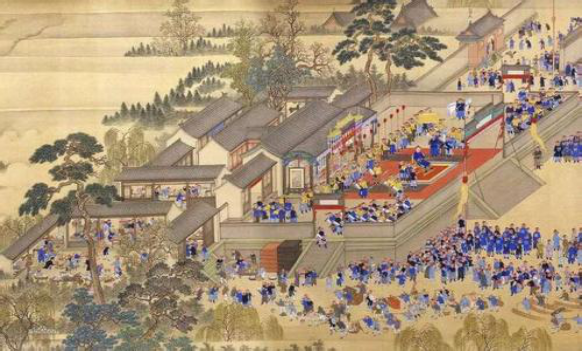
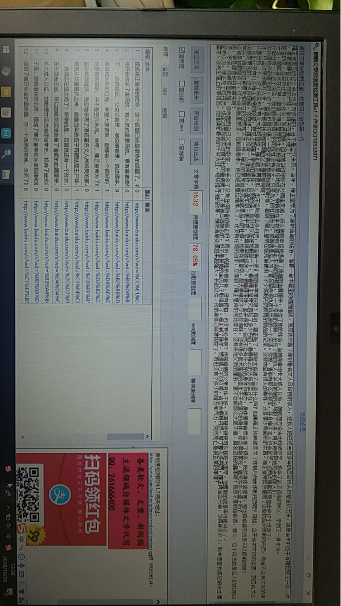

雍正帝的死因，众说纷纭，其实一目了然
提起雍正皇帝的短命，这个话题已经是很热的话题了。有人说他是被杀的，有人说他是吃丹药吃多了害死的，有人说他是累死的。更有甚者说他是被乾隆谋害的。总之，众口不一，众说纷纭，公说公有理，婆说婆有理，说法很多。下面，我主要讲讲这些说法的原因和大致的过程，希望大家读后，能够有一个很好的了解。
雍正被害死的这个说法也是有依据的，并不是空穴来风。当年，雍正皇帝为了维护清朝的统治，借着一部书籍里的细微错误，残忍地杀害了清初著名文人吕留良的家人，还找人把已经去世多年的吕留良从坟墓里扒出来，就像当年的伍子胥鞭挞楚王尸体一样，狠狠地鞭挞吕留良的尸体，做得实在是太绝！
所幸的是，吕留良还有一个孙女，叫吕四娘。因为她当时刚好在外面走亲戚，所以她就幸运地逃离了清朝的血腥屠杀，保住了她的性命。当她侥幸地长大成人以后，她就想方设法地拜师学艺，投奔了武艺很高的师父，学到了一身本领。于是，她就潜伏在北京，摸清了雍正皇帝的生活规律和居住地点后，悄悄地在半夜里溜到了雍正生活的圆明园，在一个漆黑的夜晚，杀死了她的仇人，并且把她的头颅割了下来，用头颅祭祀她死去的家人们。
仔细分析一下这个说法，我们就会觉得它的可信性没有多大，只是后人的杜撰而已，或者就是后人为了替吕留良报仇而说出来的一个笑话。你想，清朝有那么多禁军，并且雍正本人也会武艺。这两点就能轻易地击碎这个谎言。
说他是吃丹药害死的。这个说法也有依据。一些学者在整理档案的时候，看到了雍正皇帝在临死前使用了不少炼制丹药所用的物品的记录。这些物品有很大的毒性，还是很少有解药的东西。雍正皇帝既然服用了这些物品所炼制的丹药，肯定不会有太好的身体，只会过早地离开人世，早早地寻找他那英明的父亲康熙皇帝。
认真分析一下，这个说法也没有太大的可信性。雍正就是再傻瓜，也不会吃那么多丹药，肯定有一些正常的医学常识啊！再说，雍正吃了，那些太医就不会说什么吗？如果雍正纯粹就是为了炼制丹药而炼制丹药呢？可惜，出于保护文物的需要，到目前为止，我们还没有打开雍正皇帝的陵墓，更见不到雍正皇帝的遗体，否则的话，我们可以好好地解剖一下，看看雍正皇帝究竟吃了多少丹药，看看雍正的头颅是否还在？

说他是累死的，这也好理解。你想想，雍正经常一人批阅奏折，总是忙到三更半夜，早晨很早就起床了。他睡得很晚，起来很早，自然不会有什么好的身体和精力，身体素质自然会差了很多。既然身体素质差，那他得病暴死也是可以理解的啊！其实，雍正的这种累死和现在的过劳死不太一样。雍正的累死说法完全就是后人的杜撰。如果你是皇帝，每天要哦吃不少山珍海味，还有很多医术高超的医生天天检查你的身体，你会得病累死，就死在办公桌上吗？
说他是被乾隆杀了，这个说法就是荒谬。在乾隆看来，他已经是皇位继承人了，还没有任何的对手，又得到了雍正皇帝的无比信任，没有杀他父亲的理由，更不会做那么大逆不道、臭名远扬的蠢事啊！既然不是乾隆做得，那么，这个说法就是后人的栽赃陷害，更是肆意地扭曲事实啊！退一步说，如果你是乾隆，你会跑到自己父亲的卧室，亲手杀了没有任何防备的雍正吗？再说，乾隆杀他爸爸，没有理由，也没有必要啊！他知道他的父亲身体不好，也清楚他很快可以接班当皇帝。他要做的就是等待就可以了。
笔者认为，雍正死于吃丹药、纵欲过度和疲劳过度引起的重病而亡，不是被吕四娘杀的，也不是被他的宝贝儿子乾隆害了。雍正到了晚年，觉得精力不如以前，肯定会服用丹药。服了那么多丹药，雍正肯定会兴奋，觉得身体好了，就会想着找嫔妃解决生理需求。
办完生理上的事情后，他继续忙着他的千秋大业，继续推行他的改革，想把清朝变得越来越强大。长此以往，他的身体已经被掏空了，再也没有了多少的精力和气力，突然死亡是很正常的事情。
